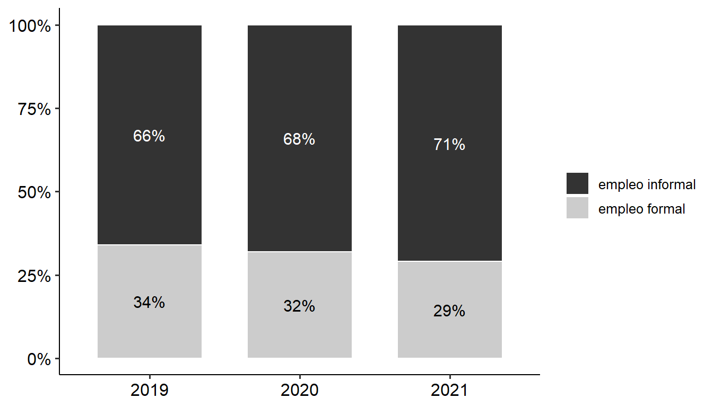
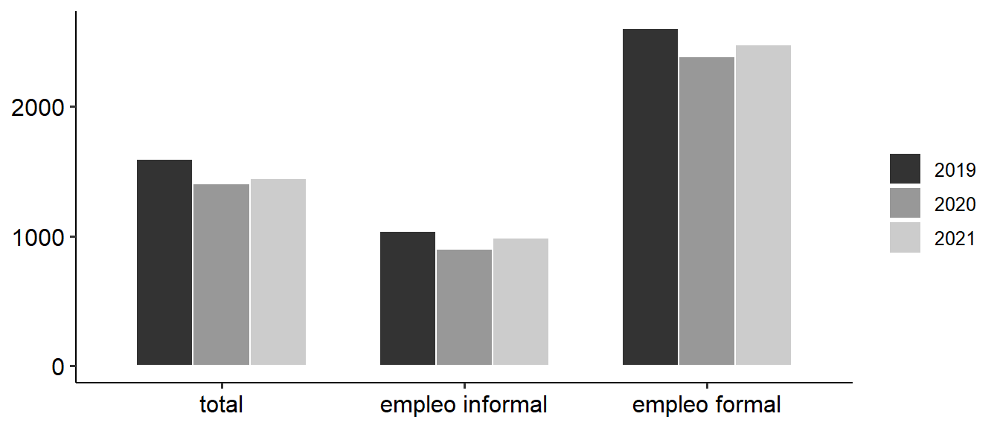
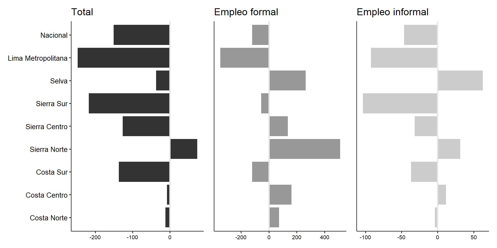
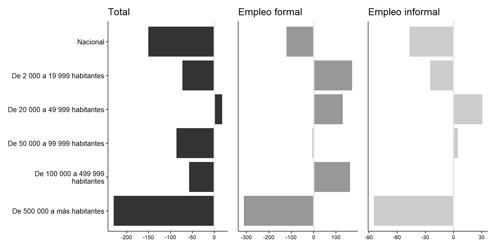
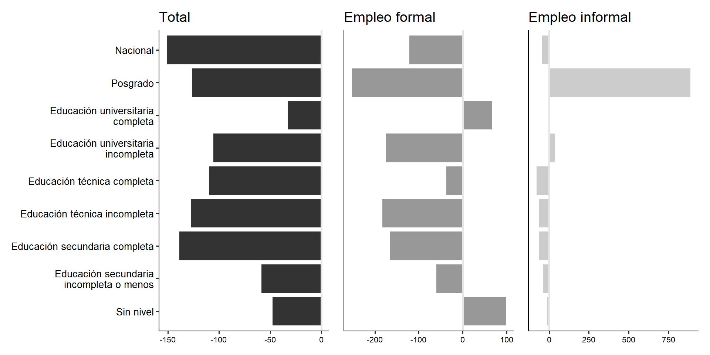
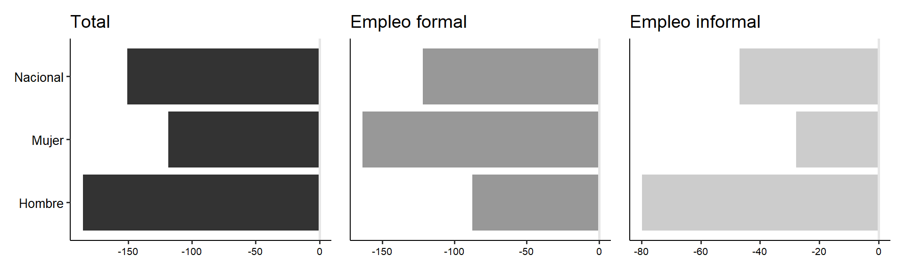
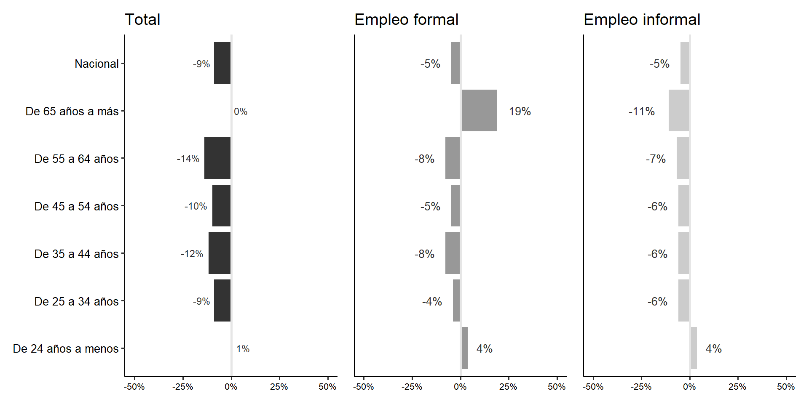
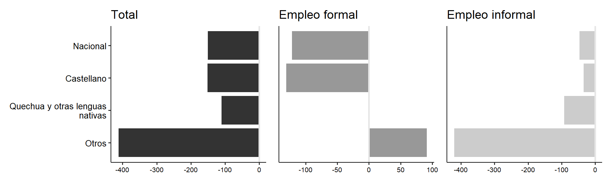
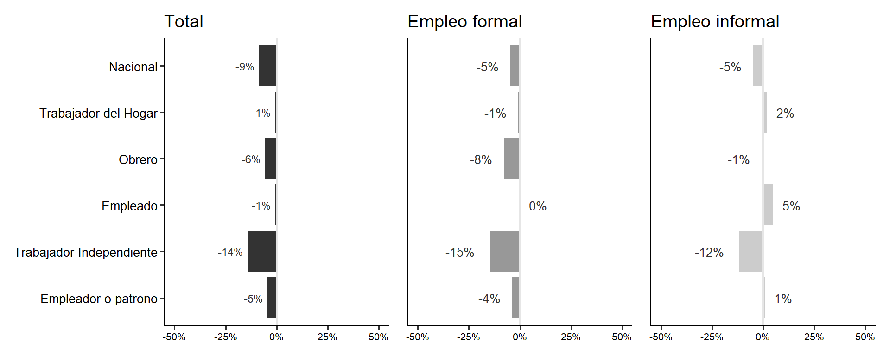

Se observa una reducción de la PEA ocupada en 2020 en 10 puntos porcentuales en comparación al 2019.
En el 2020, aumentó en 6% el número de personas que no buscaban trabajo (NO PEA).
Si bien la PEA ocupada tuvo una disminución de 10% en 2020, se observa una recuperación hacia 2021. Sin embargo, no ha regresado al nivel prepandemia.
Un aumento de la PEA deoscupada en 2020 y sobre todo de la No Pea, aquellos que no buscan trabajo.
La No PEA en el 2021 regresó a los niveles del 2019, es decir, 27%.
Figura 1: Características de la PEA entre 2019 y 2021
Tabla 1 muestra que hubo una disminución importante de la PEA ocupada urbana en 2020 seguido de una recuperación en 2021 cercana a niveles prepandemia.
Se observa una disminución importante en Lima Metropolitana que perdió más de un millón de trabajadores hacia el 2020.
Las ciudades más afectadas han sido las ciudades intermedias y las grandes ciudades, las cuales han perdido más de un millón de trabajadores entre 2019 y 2020. Las ciudades intermedias han tenido una recuperación más lenta.
Tabla 1: Características de la PEA ocupada urbana según dominio y estrato entre 2019 y 2021 (porcentajes verticales)
Variable
2019
2020
2021
Total en miles (%)
Total en miles (%)
Total en miles (%)
Nacional
13,477 (100.00%)
11,293 (100.00%)
13,376 (100.00%)
Dominio Geográfico
Costa Norte
2,257 (16.75%)
1,901 (16.83%)
2,239 (16.74%)
Costa Centro
1,054 (7.82%)
878 (7.77%)
1,032 (7.71%)
Costa Sur
312 (2.31%)
259 (2.30%)
318 (2.37%)
Sierra Norte
344 (2.55%)
301 (2.66%)
372 (2.78%)
Sierra Centro
1,084 (8.04%)
944 (8.36%)
1,098 (8.21%)
Sierra Sur
1,558 (11.56%)
1,377 (12.19%)
1,638 (12.24%)
Selva
1,449 (10.75%)
1,368 (12.11%)
1,560 (11.67%)
Lima Metropolitana
5,419 (40.21%)
4,266 (37.77%)
5,119 (38.27%)
Estrato Geográfico
De 500 000 a más habitantes
6,369 (47.26%)
5,018 (44.44%)
6,126 (45.80%)
De 100 000 a 499 999 habitantes
2,708 (20.09%)
2,250 (19.92%)
2,354 (17.60%)
De 50 000 a 99 999 habitantes
784 (5.82%)
614 (5.44%)
797 (5.96%)
De 20 000 a 49 999 habitantes
1,232 (9.14%)
1,061 (9.39%)
1,241 (9.28%)
De 2 000 a 19 999 habitantes
2,384 (17.69%)
2,350 (20.81%)
2,857 (21.36%)
?@tbl-peasexedaedpo muestra que hubo una reducción mayor de la fuerza laboral femenina entre 2019 y 2020 superando un millón doscientos mil empleos perdidos (alrededor de la población del Callao).
La fuerza laboral masculina también experimentó una caída en 2020; sin embargo, se observa una recuperación en términos del tamaño que supera a la dimensión del 2019.
Los trabajadores menores 44 años han sido los más afectados, en especial los que tienen entre 35 y 44 años.
Además se observa que hacia el 2021, los trabajadores entre 55 y 64 años no habían recuperado su tamaño a niveles prepandemia.
Los trabajadores con únicamente educación secundaria o menos fueron los más afectados durante la pandemia; no obstante, se observa una recuperación hacia 2021.
La pandemia afectó sobre todo a los trabajadores que se consideraban no pobres llegando a reducirse la fuerza laboral en dos millones hacia el 2020. Este grupo no se ha recuperado a niveles prepandemia hacia 2021.
Tabla 2: Características de la PEA ocupada urbana según sexo y grupo de edad entre 2019 y 2021 (porcentajes verticales)
Variable
2019
2020
2021
Total en miles (%)
Total en miles (%)
Total en miles (%)
Nacional
13,477 (100.00%)
11,293 (100.00%)
13,376 (100.00%)
Sexo
Hombre
7,444 (55.24%)
6,497 (57.53%)
7,504 (56.10%)
Mujer
6,033 (44.76%)
4,797 (42.47%)
5,871 (43.90%)
Grupos de edad
De 24 años a menos
2,121 (15.74%)
1,688 (14.94%)
2,105 (15.74%)
De 25 a 34 años
3,148 (23.36%)
2,847 (25.21%)
3,376 (25.24%)
De 35 a 44 años
3,347 (24.84%)
2,650 (23.47%)
3,112 (23.27%)
De 45 a 54 años
2,352 (17.45%)
2,158 (19.11%)
2,501 (18.70%)
De 55 a 64 años
1,763 (13.08%)
1,344 (11.90%)
1,575 (11.77%)
De 65 años a más
746 (5.54%)
606 (5.36%)
706 (5.28%)
Tabla 3: Características de la PEA ocupada urbana según nivel educativo y pobreza entre 2019 y 2021 (porcentajes verticales)
Variable
2019
2020
2021
Total en miles (%)
Total en miles (%)
Total en miles (%)
Nacional
13,477 (100.00%)
11,293 (100.00%)
13,376 (100.00%)
Nivel educativo
Sin nivel
225 (1.67%)
172 (1.53%)
207 (1.55%)
Educación secundaria incompleta o menos
3,596 (26.69%)
3,091 (27.37%)
3,757 (28.09%)
Educación secundaria completa
4,211 (31.25%)
3,661 (32.42%)
4,476 (33.46%)
Educación técnica incompleta
794 (5.89%)
677 (5.99%)
836 (6.25%)
Educación técnica completa
1,702 (12.63%)
1,390 (12.30%)
1,554 (11.62%)
Educación universitaria incompleta
1,014 (7.52%)
750 (6.65%)
905 (6.77%)
Educación universitaria completa
1,578 (11.71%)
1,295 (11.47%)
1,385 (10.35%)
Posgrado
356 (2.64%)
257 (2.28%)
255 (1.91%)
Pobreza
Pobre Extremo
83 (0.61%)
196 (1.73%)
200 (1.50%)
Pobre No Extremo
1,482 (10.99%)
2,009 (17.79%)
2,156 (16.12%)
No Pobre
11,913 (88.39%)
9,088 (80.47%)
11,020 (82.39%)
Tabla 4 entre los grupos más numerosos se encuentran trabajadores independientes, empleados y obreros. Entre ellos, los empleados hacia el 2021 no se ha recuperado de su situación prepandemia habiendo perdido 500 mil trabajadores entre 2019 y 2021.
Tanto el empleo informal como el formal se redujeron en 2020. El empleo informal ha aumentado en 603 mil trabajadores entre 2019 y 2021.
Tabla 4: Características de la PEA ocupada urbana según ocupación principal y situación de informalidad entre 2019 y 2021 (porcentajes verticales)
Variable
2019
2020
2021
Total en miles (%)
Total en miles (%)
Total en miles (%)
Nacional
13,477 (100.00%)
11,293 (100.00%)
13,376 (100.00%)
Posición en ocupación principal o negocio
Empleador o patrono
578 (4.29%)
349 (3.09%)
470 (3.51%)
Trabajador Independiente
4,589 (34.05%)
4,034 (35.72%)
4,799 (35.87%)
Empleado
4,111 (30.50%)
3,098 (27.43%)
3,520 (26.31%)
Obrero
2,998 (22.24%)
2,714 (24.03%)
3,378 (25.26%)
Trabajador Familiar No Remunerado
778 (5.77%)
833 (7.38%)
846 (6.33%)
Trabajador del Hogar
400 (2.97%)
237 (2.10%)
332 (2.49%)
Otro
24 (0.18%)
28 (0.25%)
31 (0.23%)
Situación de informalidad (ocup.principal)
empleo informal
8,944 (66.36%)
7,727 (68.42%)
9,547 (71.38%)
empleo formal
4,534 (33.64%)
3,566 (31.58%)
3,829 (28.62%)
Parte 2: CAMBIOS EN LOS NIVELES DE INFORMALIDAD
En la Figura 2 podemos observar que el empleo informal ha aumentado de manera constante entre 2019 y 2021 dentro de la PEA ocupada urbana.
Figura 2: Características del empleo de la PEA ocupada urbana entre 2019 y 2021

Tabla 5 muestra que hacia el 2021 ha aumentado el empleo informal en todos los dominios geográficos, especialmente en la Selva, Sierra Centro, y Costa Sur.
Tabla 5: Dominio de la PEA ocupada urbana entre 2019 y 2021 (porcentajes horizontales)
Variable
2019
2020
2021
empleo informal
empleo formal
empleo informal
empleo formal
empleo informal
empleo formal
Nacional
66.36%
33.64%
68.42%
31.58%
71.38%
28.62%
Dominio Geográfico
Costa Norte
72.38%
27.62%
72.31%
27.69%
74.47%
25.53%
Costa Centro
66.98%
33.02%
68.99%
31.01%
72.44%
27.56%
Costa Sur
68.06%
31.94%
67.73%
32.27%
73.07%
26.93%
Sierra Norte
68.78%
31.22%
72.88%
27.12%
73.07%
26.93%
Sierra Centro
72.91%
27.09%
75.83%
24.17%
80.27%
19.73%
Sierra Sur
70.10%
29.90%
75.57%
24.43%
77.69%
22.31%
Selva
75.85%
24.15%
81.44%
18.56%
83.72%
16.28%
Lima Metropolitana
58.56%
41.44%
58.17%
41.83%
61.89%
38.11%
Tabla 6 muestra que hacia el 2021 ha aumentado el empleo informal principalmente en las ciudades intermedias de entre 50 000 y 499 999 habitantes.
Tabla 6: Estrato geográfico de la PEA ocupada urbana entre 2019 y 2021 (porcentajes horizontales)
Variable
2019
2020
2021
empleo informal
empleo formal
empleo informal
empleo formal
empleo informal
empleo formal
Nacional
66.36%
33.64%
68.42%
31.58%
71.38%
28.62%
Estrato Geográfico
De 500 000 a más habitantes
59.28%
40.72%
58.61%
41.39%
62.85%
37.15%
De 100 000 a 499 999 habitantes
68.20%
31.80%
71.45%
28.55%
74.79%
25.21%
De 50 000 a 99 999 habitantes
69.71%
30.29%
73.59%
26.41%
75.61%
24.39%
De 20 000 a 49 999 habitantes
74.17%
25.83%
76.10%
23.90%
76.62%
23.38%
De 2 000 a 19 999 habitantes
78.04%
21.96%
81.64%
18.36%
83.40%
16.60%
Tabla 7 muestra que hacia el 2021, dentro de los trabajadores jefes de hogar, si bien hay una predominancia de mujeres en el empleo informal, ha habido un mayor aumento de los hombres con 5% aprox.
Tabla 7: Sexo del jefe de hogar en la PEA ocupada urbana entre 2019 y 2021 (porcentajes horizontales)
Variable
2019
2020
2021
empleo informal
empleo formal
empleo informal
empleo formal
empleo informal
empleo formal
Nacional
62.92%
37.08%
66.17%
33.83%
68.38%
31.62%
Sexo
Hombre
60.04%
39.96%
63.57%
36.43%
65.93%
34.07%
Mujer
70.69%
29.31%
72.95%
27.05%
73.83%
26.17%
Tabla 8 muestra que hacia el 2021, dentro de los trabajadores jefes de hogar, ha aumentado en el empleo informal los trabajadores entre 55 y 64 años principalmente seguido de los trabajadores entre 35 y 44 años.
Tabla 8: Grupo de edad del jefe de hogar en la PEA ocupada urbana entre 2019 y 2021 (porcentajes horizontales)
Variable
2019
2020
2021
empleo informal
empleo formal
empleo informal
empleo formal
empleo informal
empleo formal
Nacional
62.92%
37.08%
66.17%
33.83%
68.38%
31.62%
Grupos de edad
De 24 años a menos
81.00%
19.00%
81.81%
18.19%
84.05%
15.95%
De 25 a 34 años
64.89%
35.11%
69.16%
30.84%
69.68%
30.32%
De 35 a 44 años
61.50%
38.50%
66.10%
33.90%
67.32%
32.68%
De 45 a 54 años
59.62%
40.38%
62.18%
37.82%
64.74%
35.26%
De 55 a 64 años
58.37%
41.63%
61.94%
38.06%
66.13%
33.87%
De 65 años a más
78.75%
21.25%
78.39%
21.61%
80.05%
19.95%
Tabla 9 muestra que hacia el 2021, dentro de los trabajadores jefes de hogar, ha aumentado en el empleo informal principalmente a los trabajadores con educación universitaria incompleta y los que contaban con secundaria completa como máximo nivel alcanzado.
Tabla 9: Nivel educativo alcanzado del jefe de hogar en la PEA ocupada urbana entre 2019 y 2021 (porcentajes horizontales)
Variable
2019
2020
2021
empleo informal
empleo formal
empleo informal
empleo formal
empleo informal
empleo formal
Nacional
62.92%
37.08%
66.17%
33.83%
68.38%
31.62%
Nivel educativo
Sin nivel
92.73%
7.27%
93.56%
6.44%
95.61%
4.39%
Educación secundaria incompleta o menos
86.11%
13.89%
86.91%
13.09%
88.68%
11.32%
Educación secundaria completa
66.37%
33.63%
71.55%
28.45%
72.39%
27.61%
Educación técnica incompleta
57.61%
42.39%
61.75%
38.25%
62.37%
37.63%
Educación técnica completa
39.23%
60.77%
38.80%
61.20%
42.78%
57.22%
Educación universitaria incompleta
51.04%
48.96%
58.72%
41.28%
58.33%
41.67%
Educación universitaria completa
25.07%
74.93%
24.90%
75.10%
26.68%
73.32%
Posgrado
8.99%
91.01%
8.24%
91.76%
8.06%
91.94%
Tabla 10 muestra que hacia el 2021, los trabajadores de lengua materna castellano han aumentado en el empleo informal en un 5% aprox.
Tabla 10: Lengua materna de la PEA ocupada urbana entre 2019 y 2021 (porcentajes horizontales)
Variable
2019
2020
2021
empleo informal
empleo formal
empleo informal
empleo formal
empleo informal
empleo formal
Nacional
66.36%
33.64%
68.42%
31.58%
71.38%
28.62%
Lengua materna
Castellano
64.57%
35.43%
65.98%
34.02%
69.76%
30.24%
Quechua y otras lenguas nativas
80.02%
19.98%
81.77%
18.23%
82.49%
17.51%
Otros
60.51%
39.49%
82.57%
17.43%
70.37%
29.63%
Tabla 11 muestra que hacia el 2021, los trabajadores empleadores y obreros han aumentado en el empleo informal. Cabe destacar que trabajadores familiares no remunerados y otros están presentes únicamente en el empleo informal.
Tabla 11: Ocupación principal de la PEA ocupada urbana entre 2019 y 2021 (porcentajes horizontales)
Variable
2019
2020
2021
empleo informal
empleo formal
empleo informal
empleo formal
empleo informal
empleo formal
Nacional
66.36%
33.64%
68.42%
31.58%
71.38%
28.62%
Posición en ocupación principal o negocio
Empleador o patrono
45.44%
54.56%
47.21%
52.79%
51.17%
48.83%
Trabajador Independiente
85.48%
14.52%
87.41%
12.59%
87.90%
12.10%
Empleado
36.77%
63.23%
34.12%
65.88%
39.84%
60.16%
Obrero
69.80%
30.20%
70.45%
29.55%
74.13%
25.87%
Trabajador Familiar No Remunerado
100.00%
0.00%
100.00%
0.00%
100.00%
0.00%
Trabajador del Hogar
88.13%
11.87%
86.62%
13.38%
91.92%
8.08%
Otro
100.00%
0.00%
100.00%
0.00%
100.00%
0.00%
Tabla 12 muestra que hacia el 2021, los trabajadores no pobres aumentaron en el empleo informal con cerca de 5%.
Tabla 12: Condición de pobreza de la PEA ocupada urbana entre 2019 y 2021 (porcentajes horizontales)
Variable
2019
2020
2021
empleo informal
empleo formal
empleo informal
empleo formal
empleo informal
empleo formal
Nacional
66.36%
33.64%
68.42%
31.58%
71.38%
28.62%
Pobreza
Pobre Extremo
98.98%
1.02%
94.30%
5.70%
94.34%
5.66%
Pobre No Extremo
89.99%
10.01%
86.59%
13.41%
87.05%
12.95%
No Pobre
63.76%
36.24%
64.25%
35.75%
68.39%
31.61%
Parte 3: INFORMALIDAD Y CONDICIONES DE VIDA: INGRESO
Acá recién aplicar ingtra_n > 0
Durante la pandemia, se observa una caída en los ingresos, especialmente en 2020, la cual no se ha recuperado del todo en 2021. Se observa una mayor caída en el empleo informal con una disminución de s/. 122 hacia el 2021.
Figura 3: Ingreso promedio por trabajo mensual de la PEA ocupada urbana entre 2019 y 2021

Asimismo, la Tabla 13 y Figura 4 nos muestran que en Lima Metropolitana existe una fuerte caída en los ingresos principalmente dentro de los trabajadores formales. Por otro lado, se ve una disminución en los ingresos en la Sierra Sur de s/.218.
Tabla 13: Ingreso promedio por trabajo mensual (soles) de la PEA ocupada urbana según dominio entre 2019 y 2021
Variable
2019
2020
2021
Total
empleo informal
empleo formal
Total
empleo informal
empleo formal
Total
empleo informal
empleo formal
Nacional
1,596
1,038
2,599
1,410
904
2,381
1,447
990
2,478
Dominio Geográfico
Costa Norte
1,305
941
2,202
1,172
816
2,034
1,308
950
2,280
Costa Centro
1,400
1,033
2,076
1,321
969
2,049
1,376
1,023
2,242
Costa Sur
1,561
1,070
2,522
1,392
920
2,311
1,401
1,008
2,399
Sierra Norte
1,429
772
2,704
1,344
716
2,791
1,562
841
3,217
Sierra Centro
1,343
847
2,457
1,279
712
2,697
1,210
804
2,594
Sierra Sur
1,475
976
2,493
1,256
838
2,293
1,275
882
2,435
Selva
1,328
910
2,473
1,182
851
2,413
1,310
988
2,747
Lima Metropolitana
1,912
1,207
2,848
1,673
1,045
2,490
1,649
1,099
2,497
Figura 4: Diferencia del ingreso promedio por trabajo mensual (soles) de la PEA ocupada urbana según dominio entre 2019 y 2021

La Tabla 14 y Figura 5 nos muestran que en las ciudades grandes (de 500 000 a más habitantes) han tenido una fuerte disminución en sus ingresos de hasta s/.230. Esto se ha enfatizado más en los trabajadores formales quienes han visto sus ingresos reducidos hasta en s/.313.
Tabla 14: Ingreso promedio por trabajo mensual (soles) de la PEA ocupada urbana según estrato entre 2019 y 2021
Variable
2019
2020
2021
Total
empleo informal
empleo formal
Total
empleo informal
empleo formal
Total
empleo informal
empleo formal
Nacional
1,596
1,038
2,599
1,410
904
2,381
1,447
990
2,478
Estrato Geográfico
De 500 000 a más habitantes
1,870
1,191
2,799
1,644
1,031
2,454
1,629
1,092
2,487
De 100 000 a 499 999 habitantes
1,441
961
2,376
1,312
888
2,266
1,382
955
2,540
De 50 000 a 99 999 habitantes
1,463
1,008
2,419
1,286
882
2,293
1,384
1,018
2,415
De 20 000 a 49 999 habitantes
1,299
910
2,292
1,162
807
2,161
1,311
934
2,428
De 2 000 a 19 999 habitantes
1,195
854
2,240
1,099
747
2,362
1,150
849
2,418
Figura 5: Diferencia del ingreso promedio por trabajo mensual (soles) de la PEA ocupada urbana según estrato entre 2019 y 2021

La Tabla 15 y Figura 6 nos muestran que los ingresos de los trabajadores con educación secundaria completa y educación técnica incompleta se redujeron significativamente principalmente dentro de los trabajadores formales entre s/.167 y s/.184.
Tabla 15: Ingreso promedio por trabajo mensual (soles) de la PEA ocupada urbana según educación entre 2019 y 2021
Variable
2019
2020
2021
Total
empleo informal
empleo formal
Total
empleo informal
empleo formal
Total
empleo informal
empleo formal
Nacional
1,596
1,038
2,599
1,410
904
2,381
1,447
990
2,478
Nivel educativo
Sin nivel
598
521
1,610
584
532
1,544
570
528
1,709
Educación secundaria incompleta o menos
1,022
907
1,816
860
764
1,572
966
868
1,755
Educación secundaria completa
1,369
1,085
2,070
1,166
920
1,843
1,228
1,013
1,906
Educación técnica incompleta
1,360
1,000
2,069
1,285
875
2,086
1,249
952
1,886
Educación técnica completa
1,789
1,163
2,290
1,635
981
2,131
1,681
1,077
2,254
Educación universitaria incompleta
1,485
965
2,232
1,352
955
2,044
1,370
998
2,055
Educación universitaria completa
2,765
1,530
3,282
2,597
1,478
3,080
2,734
1,514
3,352
Posgrado
4,783
2,986
5,002
4,426
4,429
4,426
4,730
4,543
4,749
Figura 6: Diferencia del ingreso promedio por trabajo mensual (soles) de la PEA ocupada urbana según educación entre 2019 y 2021

La Tabla 16 y Figura 7 nos muestran que en general los trabajadores hombres han tenido una mayor reducción en sus ingresos entre 2019 y 2021 cercana a los s/.180. Más aún, las mujeres en el empleo formal vieron sus ingresos más reducidos (alrededor de s/.160) a diferencia de los hombres que se vieron más afectados en el empleo informal.
Tabla 16: Ingreso promedio por trabajo mensual (soles) de la PEA ocupada urbana según sexo entre 2019 y 2021
Variable
2019
2020
2021
Total
empleo informal
empleo formal
Total
empleo informal
empleo formal
Total
empleo informal
empleo formal
Nacional
1,596
1,038
2,599
1,410
904
2,381
1,447
990
2,478
Sexo
Hombre
1,820
1,226
2,777
1,549
1,019
2,525
1,644
1,152
2,690
Mujer
1,307
815
2,327
1,209
746
2,157
1,183
784
2,166
Figura 7: Diferencia del ingreso promedio por trabajo mensual (soles) de la PEA ocupada urbana según sexo entre 2019 y 2021

La Tabla 17 y Figura 8 nos muestran que, en líneas generales, los trabajadores de 55 a 64 años vieron sus ingresos más comprometidos en especial aquellos que contaban con un empleo formal. De similar manera, los trabajadores entre 35 y 44 años vieron sus ingresos reducidos principalmente los trabajadores formales. Cabe destacar, una ligera recuperación de los ingresos en los trabajadores de 24 años a menos.
Tabla 17: Ingreso promedio por trabajo mensual (soles) de la PEA ocupada urbana según grupo de edad entre 2019 y 2021
Variable
2019
2020
2021
Total
empleo informal
empleo formal
Total
empleo informal
empleo formal
Total
empleo informal
empleo formal
Nacional
1,596
1,038
2,599
1,410
904
2,381
1,447
990
2,478
Grupos de edad
De 24 años a menos
960
820
1,514
927
768
1,553
965
849
1,580
De 25 a 34 años
1,642
1,142
2,409
1,448
997
2,232
1,489
1,074
2,322
De 35 a 44 años
1,820
1,170
2,838
1,489
957
2,442
1,610
1,094
2,618
De 45 a 54 años
1,801
1,113
2,860
1,605
962
2,624
1,627
1,051
2,715
De 55 a 64 años
1,716
977
2,808
1,501
848
2,528
1,478
906
2,595
De 65 años a más
1,014
693
2,176
1,089
609
2,767
1,010
617
2,585
Figura 8: Diferencia del ingreso promedio por trabajo mensual (soles) de la PEA ocupada urbana según grupos de edad entre 2019 y 2021

La Tabla 18 y Figura 9 nos muestran que, en líneas generales, los trabajadores de habla castellana vieron sus ingresos reducidos aproximadamente en s/.150. El sector de la población de lengua materna “Otros”, que tiene sobre todo lenguas extranjeras, ha visto sus ingresos reducidos en s/.421.
Tabla 18: Ingreso promedio por trabajo mensual (soles) de la PEA ocupada urbana según lengua materna entre 2019 y 2021
Variable
2019
2020
2021
Total
empleo informal
empleo formal
Total
empleo informal
empleo formal
Total
empleo informal
empleo formal
Nacional
1,596
1,038
2,599
1,410
904
2,381
1,447
990
2,478
Lengua materna
Castellano
1,646
1,050
2,628
1,456
916
2,399
1,495
1,013
2,498
Quechua y otras lenguas nativas
1,257
968
2,259
1,128
838
2,200
1,152
876
2,260
Otros
2,045
1,412
2,918
1,607
1,396
2,416
1,642
961
3,010
Figura 9: Diferencia del ingreso promedio por trabajo mensual (soles) de la PEA ocupada urbana según lengua materna entre 2019 y 2021

La Tabla 19 y Figura 10 nos muestran que, los trabajadores formales independientes fueron los más afectados con una reducción de ingresos de s/.271. Seguido a ellos, los obreros formales vieron una reducción de s/.163. Cabe mencionar que Se filtraron a los trabajadores familiares no remunerados y otros dado que no contaban con ingresos.
Tabla 19: Ingreso promedio por trabajo mensual (soles) de la PEA ocupada urbana según posición ocupacional entre 2019 y 2021
Variable
2019
2020
2021
Total
empleo informal
empleo formal
Total
empleo informal
empleo formal
Total
empleo informal
empleo formal
Nacional
1,596
1,038
2,599
1,410
904
2,381
1,447
990
2,478
Posición en ocupación principal o negocio
Empleador o patrono
2,794
1,923
3,519
2,538
1,801
3,198
2,649
1,947
3,385
Trabajador Independiente
1,003
868
1,795
813
709
1,529
859
767
1,524
Empleado
2,286
1,227
2,900
2,261
1,256
2,780
2,259
1,291
2,895
Obrero
1,400
1,118
2,053
1,219
994
1,754
1,310
1,106
1,892
Trabajador del Hogar
1,061
981
1,657
979
903
1,476
1,054
1,003
1,633
Figura 10: Diferencia del ingreso promedio por trabajo mensual (soles) de la PEA ocupada urbana según posición ocupacional entre 2019 y 2021

La Tabla 20 y Figura 11 nos muestran que, los trabajadores no pobres vieron sus ingresos reducidos en s/.130 principalmente dentro del empleo formal.
Tabla 20: Ingreso promedio por trabajo mensual (soles) de la PEA ocupada urbana según situación de pobreza entre 2019 y 2021
Variable
2019
2020
2021
Total
empleo informal
empleo formal
Total
empleo informal
empleo formal
Total
empleo informal
empleo formal
Nacional
1,596
1,038
2,599
1,410
904
2,381
1,447
990
2,478
Pobreza
Pobre Extremo
556
553
815
550
526
864
676
642
1,168
Pobre No Extremo
890
797
1,606
833
721
1,448
917
810
1,538
No Pobre
1,687
1,084
2,634
1,547
969
2,464
1,560
1,043
2,560
Figura 11: Diferencia del ingreso promedio por trabajo mensual (soles) de la PEA ocupada urbana según nivel de pobreza entre 2019 y 2021
@online{sotelo2022,
author = {Santiago Sotelo},
title = {Descripción del mercado laboral a partir de la ENAHO},
date = {2022-06-28},
langid = {es}
}
Por favor cite este trabajo como:
Santiago Sotelo. 2022. “Descripción del mercado laboral a partir
de la ENAHO.” June 28, 2022.
Correr el código
---title: "Descripción del mercado laboral a partir de la ENAHO"subtitle: | El objetivo de este post es describir los cambios en el mercado laboral durante la pandemia a partir de la Encuesta Nacional de Hogares (ENAHO).date: "2022-06-28"categories: [enaho, tablas, graficos]image: "image.jpg"fig-align: centerfig-cap-location: topexecute: cache: refresh #no era auto? ---```{r}#importar los necesariospacman::p_load(here,tidyverse,janitor,glue,haven,rio,sjlabelled,gt,gtsummary,flextable,survey,srvyr,ggpubr,scales,officer, Hmisc, patchwork, ggtext, gdtools)#Set working directory de manera relativahere::i_am("tablas4_tesis/index.qmd")``````{r funciones para parte 1,2,3}#| label: funciones para parte 1,2,3#tabla_gentabla_gen<-function(data, weight, strata, include, sin_nacional=FALSE){#style_number_10K <- function(x) paste0(style_number(x, scale = 0.001), "M") style_number_10K <-function(x) style_number(x, scale =0.001) tbl1<- data %>%mutate(nacional="Nacional") %>% labelled::drop_unused_value_labels() %>% haven::as_factor() %>%as_survey_design(weight = fac500a) %>%tbl_strata(strata = {{strata}},.tbl_fun =~ .x %>%tbl_svysummary(include = nacional,statistic =everything()~"{n} ({p}%)",digits =all_categorical()~c(style_number_10K, 2),percent ="column",missing ="no") %>%bold_labels() %>%remove_row_type(nacional, type ="header") %>%modify_header(label =md("**Variable**"),update = stat_0 ~"Total en miles (%)") %>%modify_footnote(update =everything() ~NA) %>%bold_levels() %>%modify_column_indent(columns = label, undo =TRUE)) etiqueta<-data %>%select({{include}}) %>%get_label() tbl2<- data %>% labelled::drop_unused_value_labels() %>% haven::as_factor() %>%as_survey_design(weight = {{weight}}) %>%tbl_strata(strata = {{strata}},.tbl_fun =~ .x %>%tbl_svysummary(include = {{include}},label =everything() ~ etiqueta,statistic =everything()~"{n} ({p}%)",digits =all_categorical()~c(style_number_10K, 2),percent ="column",missing ="no") %>%bold_labels() %>%modify_header(label =md("**Variable**"),update = stat_0 ~"Total en miles (%)") %>%modify_footnote(update =everything() ~NA),.header ="**{strata}**" )if(sin_nacional==FALSE) {tbl_stack(list(tbl1, tbl2)) } else { tbl2 }}#tab_esp_cattab_esp_cat<-function(data, weight, strata, by, include, percent, overall=TRUE){ tbl1<-data %>%mutate(nacional="Nacional") %>% labelled::drop_unused_value_labels() %>%as_label() %>%as_survey_design(weight = fac500a) %>%tbl_strata(strata = {{strata}},.tbl_fun =~ .x %>%tbl_svysummary(by = {{by}},include = nacional,statistic =everything()~"{p}%",digits =all_categorical()~c(2),percent = percent,missing ="no") %>% {if(overall==TRUE) add_overall(., col_label ="Total") else .} %>%remove_row_type(nacional, type ="header") %>%modify_footnote(update =everything() ~NA) %>%bold_levels() %>%modify_column_indent(columns = label, undo =TRUE) %>%modify_header(label =md("**Variable**"), stat_1 ~"**{level}**", stat_2 ~"**{level}**"),.header ="**{strata}**" ) etiqueta<-data %>%select({{include}}) %>%get_label() tbl2<-data %>% labelled::drop_unused_value_labels() %>%as_label() %>%as_survey_design(weight = {{weight}}) %>%tbl_strata(strata = {{strata}},.tbl_fun =~ .x %>%tbl_svysummary(by = {{by}},include = {{include}},label =everything() ~ etiqueta,statistic =everything()~"{p}%",digits =all_categorical()~c(2),percent = percent,missing ="no") %>% {if(overall==TRUE) add_overall(., col_label ="Total") else .} %>%modify_footnote(update =everything() ~NA) %>%bold_labels() %>%modify_header(label =md("**Variable**"), stat_1 ~"**{level}**", stat_2 ~"**{level}**"),.header ="**{strata}**" )tbl_stack(list(tbl1, tbl2))}#tab_esp_numtab_esp_num<-function(data, weight, strata, by, include, fill){ variable1 <- data %>%select({{include}}) %>%names() label1 <- data %>%select({{include}}) %>% sjlabelled::label_to_colnames() %>%names() data %>% labelled::drop_unused_value_labels() %>%as_label() %>%as_survey_design(weight = {{weight}}) %>%tbl_strata(strata = {{strata}},.tbl_fun =~ .x %>%tbl_strata2(#grade irá en la fila, solo puede ser una.strata = {{include}},~ .x %>%tbl_svysummary(#by irá en las columnas, solo puede ser unaby = {{by}},#include irá en los valores, de preferencia que sea una, antes era ageinclude = {{fill}},#filtrar missingmissing ="no",#typetype=everything() ~"continuous",#le pone la etiqueta a cada valor de las filas de gradelabel =list(all_continuous() ~ .y),statistic =list(all_continuous() ~"{mean}") ) %>%#negrita trtmodify_header(label =md("**Variable**"), all_stat_cols() ~"**{level}**") %>%#añadir columna de totales y en negritaadd_overall(., col_label ="Total"),#una tabla debajo de la otra en vez de una al costado.combine_with ="tbl_stack",#borra las filas en blanco.combine_args =list(group_header =NULL) ) %>%#añade el encabezado Grade en la filamodify_table_body(~ .x %>%mutate(variable = variable1, row_type ="level") %>% tibble::add_row(row_type ="label",variable = variable1,#label1label = label1,.before = 1L ) ) %>%#esto no me queda muy claro que hace pero bueno creo que explicitamodify_column_indent(columns = label, rows = row_type =="level") %>%#poner en negrita el Gradebold_labels() %>%#encabezado de la variable de las columnas#modify_spanning_header(all_stat_cols() ~ "**Treatment**") %>%#override el footnote para explicitar que estamos hablando de Agemodify_footnote(update =everything() ~NA) )}#theme tablastheme_tesis <-function(x) {if (!inherits(x, "flextable")) {stop("theme_tesis supports only flextable objects.") } x <-border_remove(x) fp_bdr <-fp_border(width =2,color ="white" ) x <-border_outer(x, part ="all", border = fp_bdr) x <-border_inner_h(x, border = fp_bdr, part ="all") x <-border_inner_v(x, border = fp_bdr, part ="all") x <-bold(x = x, bold =TRUE, part ="header") x <-italic(x = x, italic =TRUE, part ="footer") x <-align(x, align ="right", part ="body") x <-align(x, align ="center", part ="header") x <-bg(x, bg ="#676768", part ="header") x <-color(x, color ="white", part ="header") x <-bg(x, bg ="#e3e3e3", part ="body") x <-merge_h(x, part ="body") x <-compose(x, value =as_paragraph("Variable"), i=1, j=1, part ="header") x <-merge_at(x, i=1:2, j=1, part ="header") x <- flextable::font(x, fontname="Arial Narrow", part="all") x <- flextable::fontsize(x, size=10, part="all") x <-align(x, j=1, align ="left", part ="body")fix_border_issues(x)}#compara_grafcompara_graf<-function(data, var){ var_orden<-data.frame(values=c(data %>% labelled::drop_unused_value_labels() %>%pull({{var}}) %>%get_values(),data %>% labelled::drop_unused_value_labels() %>%pull({{var}}) %>%get_values() %>%as.data.frame() %>%nrow() +1),labels=c(data %>% labelled::drop_unused_value_labels() %>%pull({{var}}) %>%get_labels(), "Nacional") ) graf_total<-rbind(#Nacional data %>% labelled::drop_unused_value_labels() %>% haven::as_factor() %>%mutate(var1="Nacional") %>%group_by(ano, ocupinf, var1) %>%summarise(var =round_half_up(wtd.mean(ingtra_n, weights =fac500a) ,0)), data %>% labelled::drop_unused_value_labels() %>% haven::as_factor() %>%mutate(var1="Nacional") %>%mutate(ocupinf="total") %>%group_by(ano, ocupinf, var1) %>%summarise(var =round_half_up(wtd.mean(ingtra_n, weights =fac500a) ,0)),#Variable data %>% labelled::drop_unused_value_labels() %>% haven::as_factor() %>%rename(var1={{var}}) %>%group_by(ano, ocupinf, var1) %>%summarise(var =round_half_up(wtd.mean(ingtra_n, weights =fac500a) ,0)), data %>% labelled::drop_unused_value_labels() %>% haven::as_factor() %>%rename(var1={{var}}) %>%mutate(ocupinf="total") %>%group_by(ano, ocupinf, var1) %>%summarise(var =round_half_up(wtd.mean(ingtra_n, weights =fac500a) ,0)) ) %>%ungroup() %>%filter(!(ano %in%"2020")) %>%pivot_wider(names_from = ano, values_from = var) %>%rowwise() %>%mutate(sub=`2021`-`2019`,porc=round_half_up(sub/`2019`*100),label=paste0(round_half_up(sub/`2019`*100), "%") ) %>%ungroup() %>%filter(ocupinf %in%"total") %>%mutate(var1=as.factor(var1)) %>%ggplot(aes(y=porc, x=fct_relevel(fct_reorder(var1, var_orden$values, min), "Nacional", after =Inf))) +geom_bar(stat ="identity", colour ="white", fill ="#333333") +geom_text(aes(label=ifelse(porc>=0, label, "")), hjust =-0.2, size =3, colour="#333333", position =position_dodge(width =1), inherit.aes =TRUE) +geom_text(aes(label=ifelse(porc<0, label, "")), hjust =1.2, size =3, colour="#333333", position =position_dodge(width =1), inherit.aes =TRUE) +geom_hline(yintercept =0, color ="#e6e6e6", size =1) +scale_x_discrete(labels =function(x) str_wrap(x, width =30)) +scale_y_continuous(labels =function(x) paste0(x, "%"), breaks =seq(-100, 100, 25), limits =c(-50, 50)) +theme_pubr() +ggtitle("Total") +theme(legend.position="right",legend.title=element_blank(),axis.title=element_blank(),axis.text.x =element_text(size =8),axis.text.y =element_text(size =10) ) +coord_flip() graf_formal<-rbind(#Nacional data %>% labelled::drop_unused_value_labels() %>% haven::as_factor() %>%mutate(var1="Nacional") %>%group_by(ano, ocupinf, var1) %>%summarise(var =round_half_up(wtd.mean(ingtra_n, weights =fac500a) ,0)), data %>% labelled::drop_unused_value_labels() %>% haven::as_factor() %>%mutate(var1="Nacional") %>%mutate(ocupinf="total") %>%group_by(ano, ocupinf, var1) %>%summarise(var =round_half_up(wtd.mean(ingtra_n, weights =fac500a) ,0)),#Variable data %>% labelled::drop_unused_value_labels() %>% haven::as_factor() %>%rename(var1={{var}}) %>%group_by(ano, ocupinf, var1) %>%summarise(var =round_half_up(wtd.mean(ingtra_n, weights =fac500a) ,0)), data %>% labelled::drop_unused_value_labels() %>% haven::as_factor() %>%rename(var1={{var}}) %>%mutate(ocupinf="total") %>%group_by(ano, ocupinf, var1) %>%summarise(var =round_half_up(wtd.mean(ingtra_n, weights =fac500a) ,0)) ) %>%ungroup() %>%filter(!(ano %in%"2020")) %>%pivot_wider(names_from = ano, values_from = var) %>%rowwise() %>%mutate(sub=`2021`-`2019`,porc=round_half_up(sub/`2019`*100),label=paste0(round_half_up(sub/`2019`*100), "%") ) %>%ungroup() %>%filter(ocupinf %in%"Empleo formal") %>%mutate(var1=as.factor(var1)) %>%ggplot(aes(y=porc, label=label, x=fct_relevel(fct_reorder(var1, var_orden$values, min), "Nacional", after =Inf))) +geom_bar(stat ="identity", colour ="white", fill ="#989898") +geom_text(aes(label=ifelse(porc>=0, label, "")), hjust =-0.5, size =3.5, colour="#333333", position =position_dodge(width =1), inherit.aes =TRUE) +geom_text(aes(label=ifelse(porc<0, label, "")), hjust =1.5, size =3.5, colour="#333333", position =position_dodge(width =1), inherit.aes =TRUE) +geom_hline(yintercept =0, color ="#e6e6e6", size =1) +scale_x_discrete(labels =function(x) str_wrap(x, width =30)) +scale_y_continuous(labels =function(x) paste0(x, "%"), breaks =seq(-100, 100, 25), limits =c(-50, 50)) +theme_pubr() +ggtitle("Empleo formal") +theme(legend.position="right",legend.title=element_blank(),axis.title=element_blank(),axis.text.x =element_text(size =8),axis.text.y =element_blank(),axis.ticks.y =element_blank() ) +coord_flip() graf_informal<-rbind(#Nacional data %>% labelled::drop_unused_value_labels() %>% haven::as_factor() %>%mutate(var1="Nacional") %>%group_by(ano, ocupinf, var1) %>%summarise(var =round_half_up(wtd.mean(ingtra_n, weights =fac500a) ,0)), data %>% labelled::drop_unused_value_labels() %>% haven::as_factor() %>%mutate(var1="Nacional") %>%mutate(ocupinf="total") %>%group_by(ano, ocupinf, var1) %>%summarise(var =round_half_up(wtd.mean(ingtra_n, weights =fac500a) ,0)),#Variable data %>% labelled::drop_unused_value_labels() %>% haven::as_factor() %>%rename(var1={{var}}) %>%group_by(ano, ocupinf, var1) %>%summarise(var =round_half_up(wtd.mean(ingtra_n, weights =fac500a) ,0)), data %>% labelled::drop_unused_value_labels() %>% haven::as_factor() %>%rename(var1={{var}}) %>%mutate(ocupinf="total") %>%group_by(ano, ocupinf, var1) %>%summarise(var =round_half_up(wtd.mean(ingtra_n, weights =fac500a) ,0)) ) %>%ungroup() %>%filter(!(ano %in%"2020")) %>%pivot_wider(names_from = ano, values_from = var) %>%rowwise() %>%mutate(sub=`2021`-`2019`,porc=round_half_up(sub/`2019`*100),label=paste0(round_half_up(sub/`2019`*100), "%") ) %>%ungroup() %>%filter(ocupinf %in%"Empleo informal") %>%mutate(var1=as.factor(var1)) %>%ggplot(aes(y=porc, label=label, x=fct_relevel(fct_reorder(var1, var_orden$values, min), "Nacional", after =Inf))) +geom_bar(stat ="identity", colour ="white", fill ="#cccccc") +geom_text(aes(label=ifelse(porc>=0, label, "")), hjust =-0.5, size =3.5, colour="#333333", position =position_dodge(width =1), inherit.aes =TRUE) +geom_text(aes(label=ifelse(porc<0, label, "")), hjust =1.5, size =3.5, colour="#333333", position =position_dodge(width =1), inherit.aes =TRUE) +geom_hline(yintercept =0, color ="#e6e6e6", size =1) +scale_x_discrete(labels =function(x) str_wrap(x, width =30)) +scale_y_continuous(labels =function(x) paste0(x, "%"), breaks =seq(-100, 100, 25), limits =c(-50, 50)) +theme_pubr() +ggtitle("Empleo informal") +theme(legend.position="right",legend.title=element_blank(),axis.title=element_blank(),axis.text.x =element_text(size =8),axis.text.y =element_blank(),axis.ticks.y =element_blank() ) +coord_flip() graf_total + graf_formal + graf_informal}``````{r data}#| label: database1<-read_sav(here("bases_datos/enaho_19_20_21.sav"))base2<-read_sav(here("bases_datos/enaho_19_20_21_total.sav"))```# Parte 1: PEA OCUPADA URBANA- Se observa una reducción de la PEA ocupada en 2020 en 10 puntos porcentuales en comparación al 2019.- En el 2020, aumentó en 6% el número de personas que no buscaban trabajo (NO PEA).- Si bien la PEA ocupada tuvo una disminución de 10% en 2020, se observa una recuperación hacia 2021. Sin embargo, no ha regresado al nivel prepandemia.- Un aumento de la PEA deoscupada en 2020 y sobre todo de la No Pea, aquellos que no buscan trabajo.- La No PEA en el 2021 regresó a los niveles del 2019, es decir, 27%.```{r Características de la PEA entre 2019 y 2021}#| label: fig-pea#| fig-cap: "Características de la PEA entre 2019 y 2021"#| fig-height: 4base2 %>% labelled::drop_unused_value_labels() %>% haven::as_factor() %>%group_by(ano, pea) %>%count(wt=fac500a) %>%group_by(ano) %>%mutate(porc=round_half_up(n/sum(n), 2)*100,label=paste0(porc, "%")) %>%ggplot(aes(fill=pea, y=porc, x=ano, label=label)) +geom_bar(position =position_stack(), stat ="identity", width = .7, colour ="white") +geom_text(aes(label = label), position =position_stack(vjust =0.5), colour =rep(c("white", "black", "black"), 3), size =4) +scale_y_continuous(labels =label_percent(decimal.mark =",",suffix ="%", scale =1)) +scale_fill_grey(start =0.2,end =0.8) +theme_pubr() +theme(legend.position="right",legend.title=element_blank(),axis.title=element_blank() )```- @tbl-peadomes muestra que hubo una disminución importante de la PEA ocupada urbana en 2020 seguido de una recuperación en 2021 cercana a niveles prepandemia.- Se observa una disminución importante en Lima Metropolitana que perdió más de un millón de trabajadores hacia el 2020.- Las ciudades más afectadas han sido las ciudades intermedias y las grandes ciudades, las cuales han perdido más de un millón de trabajadores entre 2019 y 2020. Las ciudades intermedias han tenido una recuperación más lenta.```{r}#| label: tbl-peadomes#| tbl-cap: "Características de la PEA ocupada urbana según dominio y estrato entre 2019 y 2021 (porcentajes verticales)"tbl_stack(list( base1 %>%tabla_gen(weight = fac500a, include = dominio, strata = ano), base1 %>%tabla_gen(weight = fac500a, include = estrato, strata = ano, sin_nacional =TRUE) )) %>%as_flex_table() %>%theme_tesis()```- @tbl-peasexedaedpo muestra que hubo una reducción mayor de la fuerza laboral femenina entre 2019 y 2020 superando un millón doscientos mil empleos perdidos (alrededor de la población del Callao).- La fuerza laboral masculina también experimentó una caída en 2020; sin embargo, se observa una recuperación en términos del tamaño que supera a la dimensión del 2019.- Los trabajadores menores 44 años han sido los más afectados, en especial los que tienen entre 35 y 44 años.- Además se observa que hacia el 2021, los trabajadores entre 55 y 64 años no habían recuperado su tamaño a niveles prepandemia.- Los trabajadores con únicamente educación secundaria o menos fueron los más afectados durante la pandemia; no obstante, se observa una recuperación hacia 2021.- La pandemia afectó sobre todo a los trabajadores que se consideraban no pobres llegando a reducirse la fuerza laboral en dos millones hacia el 2020. Este grupo no se ha recuperado a niveles prepandemia hacia 2021.```{r}#| label: tbl-peasexeda#| tbl-cap: "Características de la PEA ocupada urbana según sexo y grupo de edad entre 2019 y 2021 (porcentajes verticales)"tbl_stack(list( base1 %>%tabla_gen(weight = fac500a, include = p207, strata = ano), base1 %>%tabla_gen(weight = fac500a, include = gedad, strata = ano, sin_nacional =TRUE) )) %>%as_flex_table() %>%theme_tesis()``````{r}#| label: tbl-edpobre#| tbl-cap: "Características de la PEA ocupada urbana según nivel educativo y pobreza entre 2019 y 2021 (porcentajes verticales)"tbl_stack(list( base1 %>%tabla_gen(weight = fac500a, include = educacion, strata = ano), base1 %>%tabla_gen(weight = fac500a, include = pobreza, strata = ano, sin_nacional =TRUE) )) %>%as_flex_table() %>%theme_tesis()```- @tbl-peaocupinf entre los grupos más numerosos se encuentran trabajadores independientes, empleados y obreros. Entre ellos, los empleados hacia el 2021 no se ha recuperado de su situación prepandemia habiendo perdido 500 mil trabajadores entre 2019 y 2021.- Tanto el empleo informal como el formal se redujeron en 2020. El empleo informal ha aumentado en 603 mil trabajadores entre 2019 y 2021. ```{r}#| label: tbl-peaocupinf#| tbl-cap: "Características de la PEA ocupada urbana según ocupación principal y situación de informalidad entre 2019 y 2021 (porcentajes verticales)"tbl_stack(list( base1 %>%tabla_gen(weight = fac500a, include = p507, strata = ano), base1 %>%tabla_gen(weight = fac500a, include = ocupinf, strata = ano, sin_nacional =TRUE) )) %>%as_flex_table() %>%theme_tesis()```# Parte 2: CAMBIOS EN LOS NIVELES DE INFORMALIDAD- En la @fig-empleo podemos observar que el empleo informal ha aumentado de manera constante entre 2019 y 2021 dentro de la PEA ocupada urbana. ```{r Características del empleo de la PEA ocupada urbana entre 2019 y 2021}#| label: fig-empleo#| fig-cap: "Características del empleo de la PEA ocupada urbana entre 2019 y 2021"#| fig-height: 4base1 %>% labelled::drop_unused_value_labels() %>% haven::as_factor() %>%group_by(ano, ocupinf) %>%count(wt=fac500a) %>%group_by(ano) %>%mutate(porc=round_half_up(n/sum(n), 2)*100,label=paste0(porc, "%")) %>%ggplot(aes(fill=ocupinf, y=porc, x=ano, label=label)) +geom_bar(position =position_stack(), stat ="identity", width = .7, colour ="white") +geom_text(aes(label = label), position =position_stack(vjust =0.5), colour =rep(c("white", "black"), 3), size =4) +scale_y_continuous(labels =label_percent(decimal.mark =",",suffix ="%", scale =1)) +scale_fill_grey(start =0.2,end =0.8) +theme_pubr() +theme(legend.position="right",legend.title=element_blank(),axis.title=element_blank() )```- @tbl-dominio muestra que hacia el 2021 ha aumentado el empleo informal en todos los dominios geográficos, especialmente en la Selva, Sierra Centro, y Costa Sur. ```{r}#| label: tbl-dominio#| tbl-cap: "Dominio de la PEA ocupada urbana entre 2019 y 2021 (porcentajes horizontales)"base1 %>%tab_esp_cat(weight = fac500a, strata = ano, by = ocupinf, include = dominio, percent ="row", overall=FALSE) %>%as_flex_table() %>%theme_tesis()```- @tbl-estr muestra que hacia el 2021 ha aumentado el empleo informal principalmente en las ciudades intermedias de entre 50 000 y 499 999 habitantes. ```{r}#| label: tbl-estr#| tbl-cap: "Estrato geográfico de la PEA ocupada urbana entre 2019 y 2021 (porcentajes horizontales)"base1 %>%tab_esp_cat(weight = fac500a, strata = ano, by = ocupinf, include = estrato, percent ="row", overall=FALSE) %>%as_flex_table() %>%theme_tesis()```- @tbl-sex muestra que hacia el 2021, dentro de los trabajadores jefes de hogar, si bien hay una predominancia de mujeres en el empleo informal, ha habido un mayor aumento de los hombres con 5% aprox. ```{r}#| label: tbl-sex#| tbl-cap: "Sexo del jefe de hogar en la PEA ocupada urbana entre 2019 y 2021 (porcentajes horizontales)"base1 %>%filter(p203 %in%1) %>%#jefe de hogartab_esp_cat(weight = fac500a, strata = ano, by = ocupinf, include = p207, percent ="row", overall=FALSE) %>%as_flex_table() %>%theme_tesis()```- @tbl-gedad muestra que hacia el 2021, dentro de los trabajadores jefes de hogar, ha aumentado en el empleo informal los trabajadores entre 55 y 64 años principalmente seguido de los trabajadores entre 35 y 44 años. ```{r}#| label: tbl-gedad#| tbl-cap: "Grupo de edad del jefe de hogar en la PEA ocupada urbana entre 2019 y 2021 (porcentajes horizontales)"base1 %>%filter(p203 %in%1) %>%#jefe de hogartab_esp_cat(weight = fac500a, strata = ano, by = ocupinf, include = gedad, percent ="row", overall=FALSE) %>%as_flex_table() %>%theme_tesis()```- @tbl-edu muestra que hacia el 2021, dentro de los trabajadores jefes de hogar, ha aumentado en el empleo informal principalmente a los trabajadores con educación universitaria incompleta y los que contaban con secundaria completa como máximo nivel alcanzado.```{r}#| label: tbl-edu#| tbl-cap: "Nivel educativo alcanzado del jefe de hogar en la PEA ocupada urbana entre 2019 y 2021 (porcentajes horizontales)"base1 %>%filter(p203 %in%1) %>%#jefe de hogartab_esp_cat(weight = fac500a, strata = ano, by = ocupinf, include = educacion, percent ="row", overall=FALSE) %>%as_flex_table() %>%theme_tesis()```- @tbl-leng muestra que hacia el 2021, los trabajadores de lengua materna castellano han aumentado en el empleo informal en un 5% aprox.```{r}#| label: tbl-leng#| tbl-cap: "Lengua materna de la PEA ocupada urbana entre 2019 y 2021 (porcentajes horizontales)"base1 %>%tab_esp_cat(weight = factor07, strata = ano, by = ocupinf, include = lengua, percent ="row", overall=FALSE) %>%as_flex_table() %>%theme_tesis()```- @tbl-ocupi muestra que hacia el 2021, los trabajadores empleadores y obreros han aumentado en el empleo informal. Cabe destacar que trabajadores familiares no remunerados y otros están presentes únicamente en el empleo informal.```{r}#| label: tbl-ocupi#| tbl-cap: "Ocupación principal de la PEA ocupada urbana entre 2019 y 2021 (porcentajes horizontales)"base1 %>%tab_esp_cat(weight = fac500a, strata = ano, by = ocupinf, include = p507, percent ="row", overall=FALSE) %>%as_flex_table() %>%theme_tesis()```- @tbl-pobr muestra que hacia el 2021, los trabajadores no pobres aumentaron en el empleo informal con cerca de 5%.```{r}#| label: tbl-pobr#| tbl-cap: "Condición de pobreza de la PEA ocupada urbana entre 2019 y 2021 (porcentajes horizontales)"base1 %>%tab_esp_cat(weight = factor07, strata = ano, by = ocupinf, include = pobreza, percent ="row", overall=FALSE) %>%as_flex_table() %>%theme_tesis()```# Parte 3: INFORMALIDAD Y CONDICIONES DE VIDA: INGRESOAcá recién aplicar ingtra_n > 0Durante la pandemia, se observa una caída en los ingresos, especialmente en 2020, la cual no se ha recuperado del todo en 2021. Se observa una mayor caída en el empleo informal con una disminución de s/. 122 hacia el 2021.```{r Ingreso promedio por trabajo mensual de la PEA ocupada urbana entre 2019 y 2021}#| label: fig-pea_num#| fig-cap: "Ingreso promedio por trabajo mensual de la PEA ocupada urbana entre 2019 y 2021"#| fig-height: 3rbind( base1 %>%filter(ingtra_n >0) %>% labelled::drop_unused_value_labels() %>% haven::as_factor() %>%group_by(ano, ocupinf) %>%summarise(var =round_half_up(wtd.mean(ingtra_n, weights =fac500a) ,0)), base1 %>%filter(ingtra_n >0) %>% labelled::drop_unused_value_labels() %>% haven::as_factor() %>%mutate(ocupinf="total") %>%group_by(ano, ocupinf) %>%summarise(var =round_half_up(wtd.mean(ingtra_n, weights =fac500a) ,0))) %>%ggplot(aes(fill=ano, y=var, x=fct_rev(ocupinf))) +geom_bar(position =position_dodge(), stat ="identity", width = .7, colour ="white") +scale_x_discrete(labels =function(x) str_wrap(x, width =10)) +scale_fill_grey(start =0.2,end =0.8) +theme_pubr() +theme(legend.position="right",legend.title=element_blank(),axis.title=element_blank() )``````{r tablas encabezados}#| label: tablas encabezados#| include: falsetbl_ing_nacional<- base1 %>%filter(ingtra_n >0) %>% labelled::drop_unused_value_labels() %>%as_label() %>%as_survey_design(weight = fac500a) %>%tbl_strata(strata = ano,.tbl_fun =~ .x %>%tbl_svysummary(by = ocupinf,include = ingtra_n,missing ="no",type=everything() ~"continuous",statistic =list(all_continuous() ~"{mean}"),label =list(all_continuous() ~"Nacional") ) %>%modify_header(label =md("**Variable**"), all_stat_cols() ~"**{level}**") %>%add_overall(., col_label ="Total") %>%bold_labels() %>%modify_footnote(update =everything() ~NA) )# tbl_gas_nacional<-# base1 %>% # labelled::drop_unused_value_labels() %>%# as_label() %>%# as_survey_design(weight = factor07) %>%# tbl_strata(# strata = ano,# .tbl_fun =# ~ .x %>%# tbl_svysummary(# by = ocupinf,# include = gas_cap,# missing = "no",# type= everything() ~ "continuous",# statistic = list(all_continuous() ~ "{mean}"),# label = list(all_continuous() ~ "Nacional")# ) %>%# modify_header(label = md("**Variable**"), all_stat_cols() ~ "**{level}**") %>%# add_overall(., col_label = "Total") %>% # bold_labels() %>%# modify_footnote(update = everything() ~ NA)# )```Asimismo, la @tbl-ing_dominio y @fig-ing_dominio nos muestran que en Lima Metropolitana existe una fuerte caída en los ingresos principalmente dentro de los trabajadores formales. Por otro lado, se ve una disminución en los ingresos en la Sierra Sur de s/.218.```{r}#| label: tbl-ing_dominio#| tbl-cap: "Ingreso promedio por trabajo mensual (soles) de la PEA ocupada urbana según dominio entre 2019 y 2021"#ingresotbl_stack(list( tbl_ing_nacional, base1 %>%filter(ingtra_n >0) %>%tab_esp_num(weight = fac500a, strata = ano, by = ocupinf, include = dominio, fill = ingtra_n) )) %>%as_flex_table() %>%theme_tesis()``````{r}#| label: fig-ing_dominio#| fig-cap: "Diferencia del ingreso promedio por trabajo mensual (soles) de la PEA ocupada urbana según dominio entre 2019 y 2021"#| fig-width: 10#| fig-height: 5base1 %>%filter(ingtra_n >0) %>%#cambios en el salariocompara_graf(dominio)```La @tbl-ing_estrato y @fig-ing_estrato nos muestran que en las ciudades grandes (de 500 000 a más habitantes) han tenido una fuerte disminución en sus ingresos de hasta s/.230. Esto se ha enfatizado más en los trabajadores formales quienes han visto sus ingresos reducidos hasta en s/.313.```{r}#| label: tbl-ing_estrato#| tbl-cap: "Ingreso promedio por trabajo mensual (soles) de la PEA ocupada urbana según estrato entre 2019 y 2021"#ingresotbl_stack(list( tbl_ing_nacional, base1 %>%filter(ingtra_n >0) %>%tab_esp_num(weight = fac500a, strata = ano, by = ocupinf, include = estrato, fill = ingtra_n) )) %>%as_flex_table() %>%theme_tesis()``````{r}#| label: fig-ing_estrato#| fig-cap: "Diferencia del ingreso promedio por trabajo mensual (soles) de la PEA ocupada urbana según estrato entre 2019 y 2021"#| fig-width: 10#| fig-height: 5base1 %>%filter(ingtra_n >0) %>%compara_graf(estrato)```La @tbl-ing_edu y @fig-ing_edu nos muestran que los ingresos de los trabajadores con educación secundaria completa y educación técnica incompleta se redujeron significativamente principalmente dentro de los trabajadores formales entre s/.167 y s/.184.```{r}#| label: tbl-ing_edu#| tbl-cap: "Ingreso promedio por trabajo mensual (soles) de la PEA ocupada urbana según educación entre 2019 y 2021"#ingresotbl_stack(list( tbl_ing_nacional, base1 %>%filter(ingtra_n >0) %>%tab_esp_num(weight = fac500a, strata = ano, by = ocupinf, include = educacion, fill = ingtra_n) )) %>%as_flex_table() %>%theme_tesis()``````{r}#| label: fig-ing_edu#| fig-cap: "Diferencia del ingreso promedio por trabajo mensual (soles) de la PEA ocupada urbana según educación entre 2019 y 2021"#| fig-width: 10#| fig-height: 5base1 %>%filter(ingtra_n >0) %>%compara_graf(educacion)```La @tbl-ing_sexo y @fig-ing_sexo nos muestran que en general los trabajadores hombres han tenido una mayor reducción en sus ingresos entre 2019 y 2021 cercana a los s/.180. Más aún, las mujeres en el empleo formal vieron sus ingresos más reducidos (alrededor de s/.160) a diferencia de los hombres que se vieron más afectados en el empleo informal.```{r}#| label: tbl-ing_sexo#| tbl-cap: "Ingreso promedio por trabajo mensual (soles) de la PEA ocupada urbana según sexo entre 2019 y 2021"#ingresotbl_stack(list( tbl_ing_nacional, base1 %>%filter(ingtra_n >0) %>%tab_esp_num(weight = fac500a, strata = ano, by = ocupinf, include = p207, fill = ingtra_n) )) %>%as_flex_table() %>%theme_tesis()``````{r}#| label: fig-ing_sexo#| fig-cap: "Diferencia del ingreso promedio por trabajo mensual (soles) de la PEA ocupada urbana según sexo entre 2019 y 2021"#| fig-width: 10#| fig-height: 3base1 %>%filter(ingtra_n >0) %>%compara_graf(p207)```La @tbl-ing_gedad y @fig-ing_gedad nos muestran que, en líneas generales, los trabajadores de 55 a 64 años vieron sus ingresos más comprometidos en especial aquellos que contaban con un empleo formal. De similar manera, los trabajadores entre 35 y 44 años vieron sus ingresos reducidos principalmente los trabajadores formales. Cabe destacar, una ligera recuperación de los ingresos en los trabajadores de 24 años a menos.```{r}#| label: tbl-ing_gedad#| tbl-cap: "Ingreso promedio por trabajo mensual (soles) de la PEA ocupada urbana según grupo de edad entre 2019 y 2021"#ingresotbl_stack(list( tbl_ing_nacional, base1 %>%filter(ingtra_n >0) %>%tab_esp_num(weight = fac500a, strata = ano, by = ocupinf, include = gedad, fill = ingtra_n) )) %>%as_flex_table() %>%theme_tesis()``````{r}#| label: fig-ing_gedad#| fig-cap: "Diferencia del ingreso promedio por trabajo mensual (soles) de la PEA ocupada urbana según grupos de edad entre 2019 y 2021"#| fig-width: 10#| fig-height: 5base1 %>%filter(ingtra_n >0) %>%compara_graf(gedad)```La @tbl-ing_leng y @fig-ing_leng nos muestran que, en líneas generales, los trabajadores de habla castellana vieron sus ingresos reducidos aproximadamente en s/.150. El sector de la población de lengua materna "Otros", que tiene sobre todo lenguas extranjeras, ha visto sus ingresos reducidos en s/.421.```{r}#| label: tbl-ing_leng#| tbl-cap: "Ingreso promedio por trabajo mensual (soles) de la PEA ocupada urbana según lengua materna entre 2019 y 2021"#ingresotbl_stack(list( tbl_ing_nacional, base1 %>%filter(ingtra_n >0) %>%tab_esp_num(weight = fac500a, strata = ano, by = ocupinf, include = lengua, fill = ingtra_n) )) %>%as_flex_table() %>%theme_tesis()``````{r}#| label: fig-ing_leng#| fig-cap: "Diferencia del ingreso promedio por trabajo mensual (soles) de la PEA ocupada urbana según lengua materna entre 2019 y 2021"#| fig-width: 10#| fig-height: 3base1 %>%filter(ingtra_n >0) %>%mutate(lengua=as_labelled(sjmisc::rec(lengua, rec ="3=1;1=3; else=copy"))) %>%compara_graf(lengua)```La @tbl-ing_p507 y @fig-ing_p507 nos muestran que, los trabajadores formales independientes fueron los más afectados con una reducción de ingresos de s/.271. Seguido a ellos, los obreros formales vieron una reducción de s/.163. Cabe mencionar que Se filtraron a los trabajadores familiares no remunerados y otros dado que no contaban con ingresos.```{r}#| label: tbl-ing_p507#| tbl-cap: "Ingreso promedio por trabajo mensual (soles) de la PEA ocupada urbana según posición ocupacional entre 2019 y 2021"#ingresotbl_stack(list( tbl_ing_nacional, base1 %>%filter(ingtra_n >0) %>%filter(!(p507 %in%c(5,7))) %>%tab_esp_num(weight = fac500a, strata = ano, by = ocupinf, include = p507, fill = ingtra_n) )) %>%as_flex_table() %>%theme_tesis()``````{r}#| label: fig-ing_p507#| fig-cap: "Diferencia del ingreso promedio por trabajo mensual (soles) de la PEA ocupada urbana según posición ocupacional entre 2019 y 2021"#| fig-width: 10#| fig-height: 4base1 %>%filter(ingtra_n >0) %>%filter(!(p507 %in%c(5,7))) %>%compara_graf(p507)```La @tbl-ing_pobreza y @fig-ing_pobreza nos muestran que, los trabajadores no pobres vieron sus ingresos reducidos en s/.130 principalmente dentro del empleo formal.```{r}#| label: tbl-ing_pobreza#| tbl-cap: "Ingreso promedio por trabajo mensual (soles) de la PEA ocupada urbana según situación de pobreza entre 2019 y 2021"#ingresotbl_stack(list( tbl_ing_nacional, base1 %>%filter(ingtra_n >0) %>%tab_esp_num(weight = fac500a, strata = ano, by = ocupinf, include = pobreza, fill = ingtra_n) )) %>%as_flex_table() %>%theme_tesis()``````{r}#| label: fig-ing_pobreza#| fig-cap: "Diferencia del ingreso promedio por trabajo mensual (soles) de la PEA ocupada urbana según nivel de pobreza entre 2019 y 2021"#| fig-width: 10#| fig-height: 4base1 %>%filter(ingtra_n >0) %>%compara_graf(pobreza)``````{r, eval = FALSE}#| fig-cap: "Según grupo de edad barras"#Prueba de gráfico de edadesbase %>% labelled::drop_unused_value_labels() %>%as_label() %>%as_survey_design(weight = factor07) %>%group_by(p207,gedad) %>%summarise(prop=survey_mean(),total=survey_total()) %>%ggplot() +geom_bar(data = . %>%filter(p207 %in%"Mujer"), aes(x=gedad, y=prop, fill = p207), stat="identity") +geom_bar(data = . %>%filter(p207 %in%"Hombre"), aes(x=gedad, y=-prop, fill = p207), stat="identity") +#scale_y_continuous(name = abs * 100) +scale_y_continuous (labels =function(x){paste(abs(x *100), "%")}) +coord_flip() +theme_bw()``````{r, eval = FALSE}#| fig-cap: "Según grupo de edad líneas"#Prueba de gráfico de edadesbase %>% labelled::drop_unused_value_labels() %>%as_label() %>%as_survey_design(weight = factor07) %>%group_by(p207,gedad) %>%summarise(prop=survey_mean(),total=survey_total()) %>%ggplot() +geom_line(data = . %>%filter(p207 %in%"Mujer"), aes(x=gedad, y=prop, group = p207), stat="identity", colour ="red", size =2) +geom_line(data = . %>%filter(p207 %in%"Hombre"), aes(x=gedad, y=prop, group = p207), stat="identity", colour ="blue", size =2) +#scale_y_continuous(name = abs * 100) +# scale_y_continuous (labels = function(x){paste(abs(x *100), "%")}) +# coord_flip() + theme_bw()``````{r, eval = FALSE}tbl_stack(list(tbl_gas_nacional, tbl_gas_sexo)) %>%as_tibble()#MEJOR Y LUEGO CAMBIAR EL FORMATO A LONGtbl_stack(list(tbl_gas_nacional, tbl_gas_sexo)) %>%as_tibble() %>%clean_names() %>%mutate(across(c(2:10), as.numeric)) %>%View()#clean_names al rescate, pero tengo que borrar la comatbl_stack(list(tbl_gas_nacional, tbl_gas_sexo)) %>%as_tibble() %>%clean_names() %>%mutate(across(everything(), ~str_remove_all(., ","))) %>%mutate(across(c(2:10), as.numeric)) %>%View()#i love Rbase %>% labelled::drop_unused_value_labels() %>%as_label() %>%as_survey_design(weight = factor07) %>%group_by(p207,gedad) %>%summarise(prop=survey_mean(),total=survey_total()) %>%ggplot(aes(x=gedad, y=prop, fill = p207)) +geom_bar(data = . %>%filter(p207 %in%"Mujer"), stat="identity") +geom_bar(data = . %>%filter(p207 %in%"Hombre"), aes(y=..count..*(-1)), stat="identity") +scale_y_continuous(# scale the y-labbreaks =seq(-0.4, 0.4, 0.05), ) +# scale_y_continuous(# # scale the y-lab# breaks = seq(-10, 10, 1),# labels = function(x) {# paste(abs(x), '%')# }# ) +# scale_y_continuous(labels = paste0(as.character(c(seq(2, 0, -1), seq(1, 2, 1))), "%")) +coord_flip()#seq(from, to, by)base %>% labelled::drop_unused_value_labels() %>%as_label() %>%as_survey_design(weight = factor07) %>%group_by(p207,gedad) %>%summarise(prop=survey_mean(),total=survey_total()) %>%ggplot() +geom_bar(data = . %>%filter(p207 %in%"Mujer"), aes(x=gedad, y=prop, fill = p207), stat="identity") +geom_bar(data = . %>%filter(p207 %in%"Hombre"), aes(x=gedad, y=-prop, fill = p207), stat="identity") +#scale_y_continuous(name = abs * 100) +scale_y_continuous (labels =function(x){paste(abs(x *100), "%")}) +coord_flip()tabla1(weight = factor07, strata = ano, by = ocupinf, include = gedad, percent ="row", overall=FALSE)``````{r, eval=FALSE}#| label: fig-edadsex#| fig-cap: "Pirámide demográfica de la PEA ocupada urbana entre 2019 y 2021"#| eval: falsebase1 %>% labelled::drop_unused_value_labels() %>% haven::as_factor() %>%group_by(ano, p207, gedad) %>%count(wt=fac500a) %>%group_by(ano, p207) %>%mutate(porc=round_half_up(n/sum(n), 2)*100,label=paste0(porc, "%")) %>%ggplot(aes(x=gedad, fill = p207, label = label)) +geom_bar(data =~subset(., p207 %in%"Mujer"), aes(y=porc), stat="identity", colour ="white") +geom_text(data =~subset(., p207 %in%"Mujer"), aes(y=porc, label = label), position =position_stack(vjust =0.5), size =2.9, colour ="black") +geom_bar(data =~subset(., p207 %in%"Hombre"), aes(y=-porc), stat="identity", colour ="white") +geom_text(data =~subset(., p207 %in%"Hombre"), aes(y=-porc, label = label), position =position_stack(vjust =0.5), size =2.9, colour ="white") +scale_y_continuous(breaks =seq(-30, 30, 15),labels =function(x) {paste(abs(x), '%')} ) +coord_flip() +scale_fill_grey(start =0.2,end =0.8) +theme_pubr() +facet_grid(cols =vars(ano)) +theme(legend.position ="bottom",legend.title=element_blank(),axis.title=element_blank(),axis.text =element_text(size =9) )```
![]()